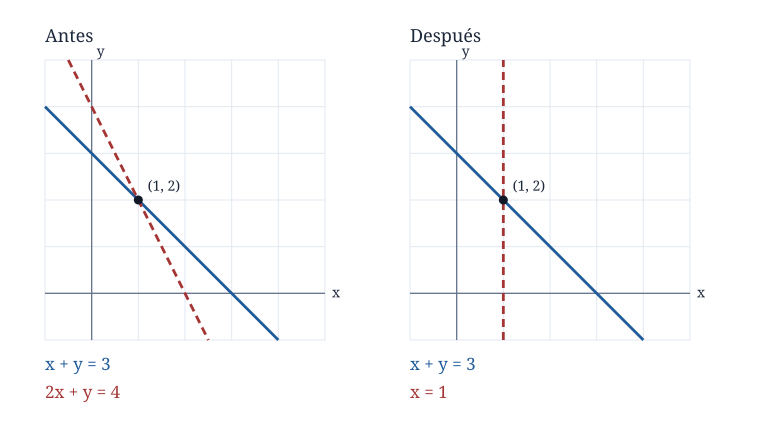
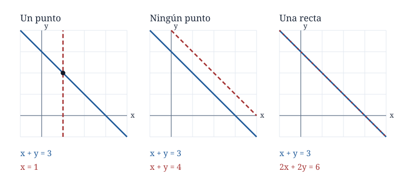
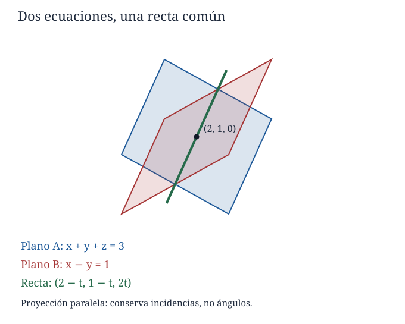
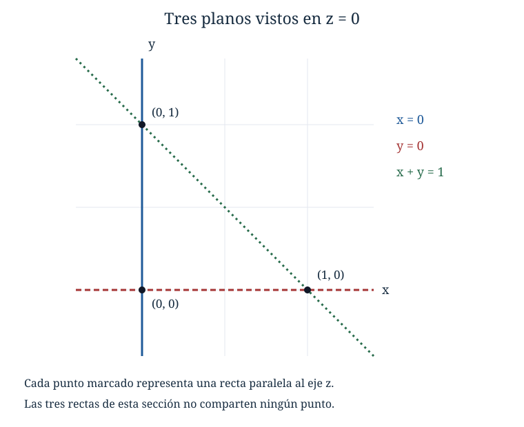
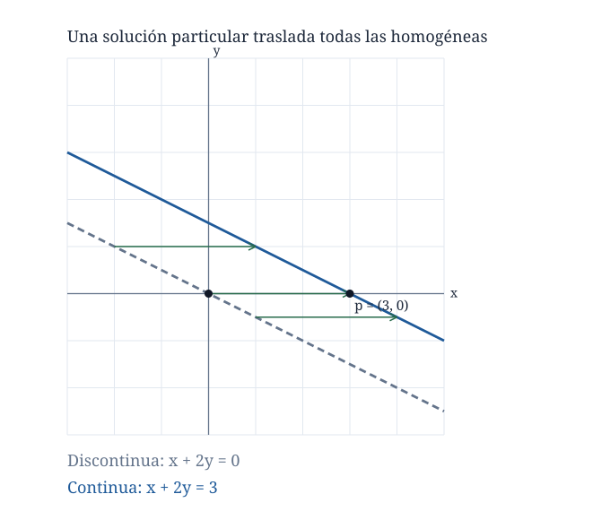

Capítulo 1. Sistemas lineales y eliminación
Álgebra para matemáticos · Tomo II
Índice del tomo II · Obra completa · Capítulo 2 →
Un laboratorio prepara diez litros de una mezcla a partir de tres soluciones que contienen, respectivamente, un diez, un veinte y un cuarenta por ciento de cierta sustancia. La mezcla final debe contener dos litros de esa sustancia. Si \(x\), \(y\) y \(z\) son los litros tomados de cada solución, las dos condiciones son
\[ \begin{cases} x+y+z=10,\\ x+2y+4z=20. \end{cases} \]
La segunda ecuación expresa la cantidad de sustancia después de multiplicar por diez la igualdad \(0{,}1x+0{,}2y+0{,}4z=2\). Hemos supuesto que los volúmenes se suman; es una condición del modelo, que deberá comprobarse al aplicarlo a una mezcla real. Las incógnitas deben ser no negativas, aunque por un momento conviene separar esa restricción del problema de resolver las igualdades.
Restar la primera ecuación de la segunda da \(y+3z=10\). Si elegimos \(z=t\), quedan \(y=10-3t\) y \(x=2t\), por lo que todas las soluciones algebraicas tienen la forma \((2t,10-3t,t)\). Cada valor de \(t\) produce una terna que satisface las dos ecuaciones, y toda terna que las satisface aparece de esa manera. Las restricciones físicas seleccionan \(0\le t\le10/3\). Los datos permiten una familia de mezclas: para \(t=1\) obtenemos \((2,7,1)\), mientras que para \(t=2\) obtenemos \((4,4,2)\).
Una medición adicional puede decidir entre ellas. Supongamos que los costos por litro son uno, dos y tres unidades monetarias y que el presupuesto utilizado fue dieciocho. La nueva ecuación es \(x+2y+3z=18\). Al restarla de la ecuación de concentración obtenemos \(z=2\), que selecciona la mezcla \((4,4,2)\). El procedimiento ha cambiado el aspecto de las ecuaciones para hacer visible la información que contienen. Necesitamos entender cuándo ese cambio conserva todas las soluciones y cómo organizarlo cuando hay muchas incógnitas.
1.1. Qué cuenta como solución
Una ecuación lineal en las incógnitas \(x_1,\ldots,x_n\) es una igualdad \(a_1x_1+\cdots+a_nx_n=b\), donde los coeficientes \(a_j\) y el término independiente \(b\) están fijados en el dominio numérico elegido. Se permiten coeficientes cero, incluso todos ellos. Un sistema lineal reúne un número finito de esas ecuaciones, que han de satisfacerse simultáneamente. Para \(m\) ecuaciones escribiremos
\[ \begin{cases} a_{11}x_1+\cdots+a_{1n}x_n=b_1,\\ \vdots\\ a_{m1}x_1+\cdots+a_{mn}x_n=b_m. \end{cases} \]
El primer índice de \(a_{ij}\) indica la ecuación y el segundo la incógnita. Una solución es una terna, pareja o, en general, \(n\)-tupla ordenada \((u_1,\ldots,u_n)\) del dominio elegido que hace verdaderas todas las igualdades al sustituir \(x_j=u_j\). Mantendremos fijo el orden de las incógnitas. El conjunto de soluciones puede ser vacío; cuando no lo es, diremos que el sistema es compatible o consistente.
En el problema del laboratorio el dominio algebraico es \(\mathbb R\) y luego imponemos desigualdades. En otros problemas importa que los valores sean racionales o complejos. Resolver \(2x=1\) sobre \(\mathbb Q\) da \(x=1/2\); exigir además que \(x\) sea entero cambia el problema, pues esa solución deja de estar permitida. La eliminación que estudiaremos permite dividir por cualquier coeficiente no nulo, operación disponible en \(\mathbb Q\), \(\mathbb R\) y \(\mathbb C\), pero no dentro de los enteros.
El marco algebraico común es un cuerpo \(\mathbb F\): un conjunto con suma y producto conmutativos y asociativos, con elementos \(0\) y \(1\) distintos, inversos aditivos, inversos multiplicativos de los elementos no nulos y la ley distributiva. Esas propiedades bastan para los argumentos del capítulo. Puede seguirse la primera lectura tomando \(\mathbb F=\mathbb R\); al usar geometría o desigualdades lo indicaremos expresamente. Los ejemplos numéricos se calcularán sobre \(\mathbb R\), salvo indicación contraria; los resultados y las demostraciones formulados sobre un cuerpo \(\mathbb F\) conservan ese alcance general. El ejercicio 27 muestra por qué, en un cuerpo finito, “tener una incógnita libre” requiere una conclusión distinta de “tener infinitas soluciones”.
La palabra lineal se refiere a las incógnitas declaradas. Si \(t\) es un parámetro fijo, \(tx+y=1\) es lineal en \(x,y\); \(xy=1\) y \(x^2+y=1\) no tienen la forma definida. Una expresión como \(x+y/x=2\) tampoco la tiene: además de la división por una incógnita, impone una restricción de dominio que no podemos olvidar al transformarla.
Un sistema es homogéneo cuando todos sus términos independientes son cero. La tupla \((0,\ldots,0)\) es entonces solución y se llama solución trivial. “Homogéneo” no significa que esa sea la única solución: la ecuación \(x-y=0\) tiene todas las parejas \((t,t)\). Un sistema no homogéneo tiene al menos un término independiente no nulo; puede tener ninguna, una o varias soluciones.
1.2. Consecuencias que conservan la información
En la mezcla inicial reemplazamos la segunda ecuación por la diferencia entre ambas. Toda solución anterior satisface esa diferencia. Para asegurar que no aparecen soluciones nuevas hace falta recuperar también la ecuación reemplazada: basta sumar la primera a la diferencia. La posibilidad de regresar es lo que vuelve segura la transformación.
Dos sistemas en las mismas incógnitas ordenadas y sobre el mismo cuerpo son equivalentes si tienen el mismo conjunto de soluciones. Son operaciones elementales sobre sus ecuaciones:
- intercambiar dos ecuaciones;
- multiplicar una ecuación completa por un escalar no nulo;
- reemplazar una ecuación por ella misma más un múltiplo de otra ecuación distinta, conservando las demás.
La tercera regla se escribe \(E_i\leftarrow E_i+cE_j\), con \(i\ne j\). La flecha describe una instrucción: ambos miembros de \(E_i\) cambian usando los valores actuales de las dos ecuaciones. No es un signo de equivalencia lógica entre fórmulas. Si se ejecutan varias instrucciones, se leerán en el orden indicado, salvo que se diga que usan simultáneamente las ecuaciones anteriores.
Proposición 1.1. Una operación elemental transforma un sistema lineal en otro equivalente. Una sucesión finita de operaciones elementales también conserva su conjunto de soluciones.
Demostración. Intercambiar ecuaciones sólo cambia el orden de condiciones que ya se exigían simultáneamente. Multiplicar una igualdad por \(c\ne0\) conserva su verdad en ambos sentidos, porque podemos multiplicar la nueva igualdad por \(c^{-1}\).
Para la tercera operación, escribamos las ecuaciones implicadas como \(L_i(x)=b_i\) y \(L_j(x)=b_j\), donde \(L_i\) y \(L_j\) son sus respectivas expresiones lineales. Una tupla que satisface las ecuaciones antiguas cumple \(L_i(x)+cL_j(x)=b_i+cb_j\), de modo que satisface el sistema nuevo. Recíprocamente, una solución nueva sigue satisfaciendo \(L_j(x)=b_j\), porque esa ecuación se conservó. Restarla \(c\) veces de la nueva ecuación recupera \(L_i(x)=b_i\). Las otras condiciones permanecen intactas. Tenemos las dos inclusiones entre conjuntos de soluciones y, por ello, su igualdad. Al repetir este razonamiento, cada sistema de una sucesión finita tiene las mismas soluciones que el anterior y que el inicial. \(\square\)
Las dos restricciones de las reglas tienen una función concreta. Multiplicar \(x=1\) por cero deja \(0=0\) y admite todos los valores de \(x\). Reemplazar a la vez \(E_1\) y \(E_2\) por su suma conserva sólo una condición repetida: de \(x=1\), \(y=2\) pasaríamos a dos copias de \(x+y=3\), con muchas más soluciones. Que cada nueva ecuación sea consecuencia de las antiguas garantiza un sentido de inclusión; la recuperación de las antiguas garantiza el otro.

1.3. Eliminar sin perder la vuelta
Consideremos un sistema en el que ninguna incógnita esté ya aislada:
\[ \begin{cases} x+y+z=6,\\ 2x+3y+z=11,\\ x-y+2z=5. \end{cases} \]
El coeficiente de \(x\) en la primera ecuación vale uno. Lo usamos para cancelar \(x\) en las otras dos: \(E_2\leftarrow E_2-2E_1\) y \(E_3\leftarrow E_3-E_1\). El sistema equivalente es
\[ \begin{cases} x+y+z=6,\\ y-z=-1,\\ -2y+z=-1. \end{cases} \]
El coeficiente de \(y\) en la segunda ecuación permite continuar, sin tocar la primera. La instrucción \(E_3\leftarrow E_3+2E_2\) produce \(-z=-3\). El sistema quedó escalonado:
\[ \begin{cases} x+y+z=6,\\ y-z=-1,\\ -z=-3. \end{cases} \]
La última ecuación da \(z=3\), la segunda da \(y=2\) y la primera da \(x=1\). Este recorrido desde abajo se llama sustitución regresiva. Sustituir \((1,2,3)\) en el sistema original comprueba \(6=6\), \(11=11\) y \(5=5\); la equivalencia de todos los pasos asegura además que no hemos dejado otra solución fuera.
El primer coeficiente no nulo de una ecuación, al leer las incógnitas en el orden fijado, se llama su pivote. Diremos que un sistema está escalonado respecto de sus coeficientes cuando las ecuaciones sin coeficientes no nulos están al final y la incógnita del pivote de cada ecuación restante aparece más a la derecha que la del pivote anterior. En particular, debajo de un pivote los coeficientes de su incógnita son cero. Las ecuaciones finales pueden ser identidades \(0=0\) o contradicciones \(0=c\) con \(c\ne0\); el término independiente no cuenta como coeficiente de una incógnita.
Un pivote necesita ser distinto de cero porque lo usamos como divisor. Para eliminar un coeficiente \(d\) mediante un pivote \(a\ne0\) reemplazamos la ecuación correspondiente por ella misma menos \(d/a\) veces la ecuación del pivote. La elección del múltiplo se obtiene al exigir \(d-(d/a)a=0\).
La primera ecuación disponible puede comenzar con cero. En
\[ \begin{cases} y+z=3,\\ 2x-y+z=1,\\ x+y-z=2 \end{cases} \]
intercambiamos la primera y la tercera. Restar dos veces la nueva primera de la segunda deja \(-3y+3z=-3\); la tercera es \(y+z=3\). Podemos usar la tercera como siguiente ecuación pivote, mediante un nuevo intercambio, y eliminar \(y\): \(-3y+3z=-3\) más tres veces \(y+z=3\) da \(6z=6\). Se obtiene \(z=1\), \(y=2\), \(x=1\). El cero inicial exigía escoger otra ecuación, no anunciaba incompatibilidad.
1.4. Por qué el procedimiento termina
El ejemplo sugiere un algoritmo que sirve también si \(m\ne n\). Conservamos arriba las ecuaciones que ya tienen pivote y trabajamos sólo con las restantes. Entre estas buscamos la incógnita más a la izquierda con algún coeficiente no nulo. Si existe, intercambiamos ecuaciones para colocar arriba una con ese coeficiente y la usamos para anularlo en todas las ecuaciones que quedan debajo. Después dejamos fija la ecuación elegida y repetimos el proceso en las inferiores.
La elección de la incógnita más a la izquierda hace que todas las ecuaciones de la parte activa tengan coeficientes cero en las posiciones anteriores. Por eso sus combinaciones no vuelven a introducir incógnitas ya eliminadas. Cada paso fija una ecuación adicional y desplaza estrictamente a la derecha la posición del pivote. Habrá a lo sumo \(\min(m,n)\) pasos de elección de pivote. Cada paso utiliza un número finito de operaciones elementales; el proceso termina cuando no quedan ecuaciones activas o sus coeficientes son todos cero.
Teorema 1.2 (eliminación). Todo sistema de un número finito de ecuaciones lineales en un número finito de incógnitas sobre un cuerpo puede transformarse mediante operaciones elementales en un sistema escalonado equivalente.
Demostración. El procedimiento anterior proporciona una construcción finita. El pivote elegido es no nulo; cada anulación usa la operación \(E_i\leftarrow E_i-(d/a)E_j\) con ecuaciones distintas. Los intercambios y anulaciones son elementales y conservan soluciones por la proposición 1.1. Las posiciones de los pivotes avanzan estrictamente a la derecha y las ecuaciones con coeficientes nulos quedan al final, de modo que el resultado cumple la definición de sistema escalonado. \(\square\)
No hemos supuesto que el número de ecuaciones sea el de incógnitas. Tampoco hemos necesitado que cada incógnita tenga un pivote. La información que falte aparecerá al reconstruir las soluciones.
1.5. Contradicciones, identidades y libertad
Un sistema escalonado puede terminar en una igualdad imposible. Por ejemplo,
\[ \begin{cases} x+2y-z=1,\\ 2x+4y-2z=3 \end{cases} \]
se transforma por \(E_2\leftarrow E_2-2E_1\) en una primera ecuación intacta y \(0=1\). No existe ninguna tupla que satisfaga ambas. En cambio, si el segundo término independiente fuese \(2\), la misma operación produciría \(0=0\). Esa identidad no exige que ninguna incógnita sea cero; no añade una restricción.
En un sistema escalonado, las incógnitas que corresponden a pivotes se llaman principales. Las restantes se llaman libres. “Libre” significa que podemos elegir su valor arbitrariamente en el cuerpo y resolver después, desde la última ecuación, las incógnitas principales, siempre que no haya contradicción.
Consideremos
\[ \begin{cases} x+2y-z+w=3,\\ y+z-2w=1. \end{cases} \]
Las principales son \(x,y\) y las libres son \(z,w\). Elegir \(z=s\) y \(w=t\) da \(y=1-s+2t\) y luego \(x=1+3s-5t\). La solución completa es
\[ (x,y,z,w)=(1+3s-5t,\;1-s+2t,\;s,\;t), \qquad s,t\in\mathbb F. \]
Una parametrización completa tiene dos obligaciones: cada elección de parámetros debe producir una solución y toda solución debe quedar representada. Aquí la primera se comprueba sustituyendo en ambas ecuaciones. Para la segunda, cualquier solución tiene ciertos valores \(s=z\) y \(t=w\); la segunda ecuación fuerza el valor escrito de \(y\) y la primera fuerza el de \(x\). Además, los parámetros se recuperan leyendo las dos últimas coordenadas, por lo que elecciones distintas producen soluciones distintas.
Teorema 1.3 (lectura de un sistema escalonado). Sea un sistema escalonado con \(n\) incógnitas y \(r\) pivotes.
- Si contiene una ecuación \(0=c\) con \(c\ne0\), es incompatible.
- Si no contiene contradicciones, cada elección de las \(n-r\) incógnitas libres determina una única solución.
Demostración. Una contradicción no puede ser satisfecha por ninguna tupla. Supongamos que todas las ecuaciones sin coeficientes son \(0=0\). Fijemos valores arbitrarios de las incógnitas libres. En la última ecuación con pivote sólo quedan por decidir su incógnita principal y valores ya fijados; su coeficiente no nulo permite resolverla de forma única. Al subir, las principales situadas a la derecha ya fueron determinadas y las libres ya estaban fijadas, de modo que la siguiente ecuación también determina de forma única su incógnita principal. Continuamos hasta la primera. Las ecuaciones se satisfacen por construcción y las identidades finales no añaden condiciones. El mismo recorrido muestra que ninguna otra elección de las principales podría acompañar a los valores libres fijados. \(\square\)
Sobre \(\mathbb R\) o \(\mathbb C\) se deduce que hay ninguna, una o infinitas soluciones: en el caso compatible, hay una si \(r=n\) e infinitas si queda al menos una variable libre. Sobre un cuerpo de \(q\) elementos hay, en el caso compatible, \(q^{n-r}\) soluciones, porque cada una de las \(n-r\) elecciones tiene \(q\) posibilidades y la parametrización no repite soluciones.
El número \(r\) es nuestro primer encuentro con el rango: cuenta los pivotes que han quedado al separar las restricciones. En este capítulo lo leemos en un escalonamiento concreto. La afirmación de que ese número no depende de las elecciones de eliminación tendrá su demostración al formalizar matrices en C02; aquí no la usamos para justificar el algoritmo ni la clasificación.

1.6. Más ecuaciones no siempre dan más información
Las tres ecuaciones
\[ \begin{cases} x+y=3,\\ 2x-y=0,\\ 3x=3 \end{cases} \]
tienen la solución única \((1,2)\). La tercera es la suma de las dos primeras y no elimina ninguna solución que ellas admitieran. Si reemplazamos su término independiente por \(4\), las dos primeras siguen forzando \((1,2)\), pero la tercera exige \(3=4\). El sistema se vuelve incompatible. Contar ecuaciones sin examinar sus relaciones no permite decidir qué ocurre.
Con más incógnitas que ecuaciones, el teorema 1.3 sí proporciona una conclusión: si un sistema es compatible y \(n>m\), queda al menos una variable libre, porque puede haber a lo sumo \(m\) pivotes. Sobre \(\mathbb R\) o \(\mathbb C\) tendrá infinitas soluciones. La compatibilidad es indispensable: las ecuaciones \(x+y+z=0\) y \(x+y+z=1\) tienen más incógnitas que ecuaciones y ninguna solución.
Sobre \(\mathbb R\), una ecuación no degenerada en dos incógnitas describe una recta y una en tres describe un plano. Resolver el sistema consiste en hallar su intersección común. Dos planos no paralelos se cortan en una recta; una tercera ecuación puede seleccionar un punto, contener toda esa recta o no tocarla. La figura 1.3 muestra un caso en el que una parametrización describe la intersección sin depender de la perspectiva del dibujo.

La compatibilidad exige una intersección común a todas las ecuaciones. Comprobar que cada pareja de ecuaciones tiene soluciones deja todavía una posibilidad que un dibujo de dos planos no revela. Consideremos en \(\mathbb R^3\) los planos
\[ P_1:\ x=0,\qquad P_2:\ y=0,\qquad P_3:\ x+y=1. \]
Los dos primeros comparten la recta \((0,0,t)\). El primero y el tercero comparten \((0,1,t)\), mientras que el segundo y el tercero comparten \((1,0,t)\), con \(t\in\mathbb R\). Ninguna de esas intersecciones está vacía, pero son tres rectas distintas. Un punto que perteneciera a los tres planos tendría \(x=y=0\) por las dos primeras condiciones y \(x+y=1\) por la tercera, lo que exigiría \(0=1\). Las soluciones de una pareja no tienen por qué servir a las demás ecuaciones.

En este ejemplo cada ecuación es compatible con las otras por separado, pero el tercer dato contradice lo que las dos primeras exigen conjuntamente. Restar de \(x+y=1\) las ecuaciones \(x=0\) y \(y=0\) produce directamente \(0=1\). El cálculo identifica qué información entra en conflicto y muestra por qué revisar parejas no basta cuando el problema exige satisfacer todas las condiciones a la vez.
1.7. Lo que cambia al mover los datos
Los parámetros pueden cambiar tanto el número como la naturaleza de las soluciones. Estudiemos, sobre \(\mathbb R\),
\[ \begin{cases} x+y+z=2,\\ 2x+3y+4z=5,\\ 3x+4y+(a+5)z=b. \end{cases} \]
Restar dos veces la primera de la segunda da \(y+2z=1\). Restar de la tercera la suma de las dos ecuaciones originales da \(az=b-7\); esa última instrucción puede realizarse como dos operaciones elementales sucesivas, restando primero la primera y luego la segunda original, antes de modificar esta última. Una secuencia inequívoca es \(E_3\leftarrow E_3-E_1\), \(E_3\leftarrow E_3-E_2\), \(E_2\leftarrow E_2-2E_1\). Queda
\[ \begin{cases} x+y+z=2,\\ y+2z=1,\\ az=b-7. \end{cases} \]
Si \(a\ne0\), la última igualdad fija \(z=(b-7)/a\), y las anteriores dan \(y=1-2z\) y \(x=1+z\). Si \(a=0\) y \(b\ne7\), tenemos una contradicción. Si \(a=0\) y \(b=7\), \(z=t\) queda libre y todas las soluciones son \((1+t,1-2t,t)\).
Dividir por \(a\) al comienzo habría borrado los dos casos en los que \(a=0\). Cuando el pivote depende de un parámetro, la división obliga a separar el caso donde se anula. En un problema numérico el pivote es conocido; en una familia, su posible desaparición forma parte del problema.
El escalonamiento es un procedimiento exacto. Si se trabaja con mediciones redondeadas, decidir si un coeficiente es cero o sólo muy pequeño exige otras herramientas. Podemos conservar fracciones para evitar redondeos artificiales en nuestros ejemplos; no deduciremos de esa exactitud algebraica una garantía de estabilidad numérica.
Conservar una prueba de la contradicción
En la familia anterior, los valores \(a=0\) y \(b=8\) producen un sistema incompatible. Podemos comprobarlo sin calcular ninguna incógnita: sus tres ecuaciones son
\[ \begin{aligned} E_1:&\quad x+y+z=2,\\ E_2:&\quad 2x+3y+4z=5,\\ E_3:&\quad 3x+4y+5z=8. \end{aligned} \]
El miembro izquierdo de \(E_3\) es la suma de los de \(E_1\) y \(E_2\), mientras que los términos independientes no cumplen esa relación: \(8\ne2+5\). La combinación \(E_3-E_1-E_2\) exige \(0=1\). Para revisar esta conclusión basta conocer las ecuaciones originales y los tres multiplicadores \(-1,-1,1\); no necesitamos reconstruir las operaciones que llevaron a descubrirlos.
Llamaremos certificado de incompatibilidad de un sistema a una lista de escalares \(\lambda_1,\ldots,\lambda_m\) que, al combinar las ecuaciones completas, produzca \(0=1\). En términos de los coeficientes, esto significa
\[ \sum_{i=1}^m\lambda_i a_{ij}=0\quad\text{para cada }j=1,\ldots,n, \qquad \sum_{i=1}^m\lambda_i b_i=1. \]
La primera condición cancela todas las incógnitas; la segunda conserva un término independiente que hace imposible la igualdad. Si una combinación produce \(0=c\) con \(c\ne0\), dividir todos sus multiplicadores por \(c\) la normaliza a \(0=1\). Esa división es válida en cualquier cuerpo.
Teorema 1.3a (certificados de incompatibilidad). Un sistema lineal finito sobre un cuerpo es incompatible si y sólo si admite un certificado de incompatibilidad.
Demostración. Supongamos primero que existe un certificado y que \(u\) fuera una solución. Cada igualdad \(\sum_j a_{ij}u_j=b_i\) sería verdadera. Multiplicarlas por \(\lambda_i\) y sumarlas daría
\[ \sum_{j=1}^n\left(\sum_{i=1}^m\lambda_i a_{ij}\right)u_j =\sum_{i=1}^m\lambda_i b_i. \]
Las condiciones del certificado convierten el miembro izquierdo en cero y el derecho en uno. Como \(0\ne1\) en un cuerpo, no puede existir tal solución.
Para la otra dirección, escalonemos un sistema incompatible. El teorema 1.3 asegura que aparece una ecuación \(0=c\) con \(c\ne0\): si no apareciera ninguna, la sustitución regresiva construiría una solución. Necesitamos comprobar que esa ecuación contradictoria conserva una expresión como combinación de las originales. Al comenzar, cada ecuación es una combinación de ellas: basta poner uno en su propia posición y cero en las restantes. Intercambiarlas sólo intercambia esas listas de multiplicadores; multiplicar una ecuación por un escalar multiplica su lista; sumar a una ecuación un múltiplo de otra suma ese mismo múltiplo de las dos listas. Por inducción sobre las operaciones realizadas, cada ecuación obtenida sigue siendo una combinación de las originales.
La fila que expresa \(0=c\) proporciona, por tanto, multiplicadores que cancelan todos los coeficientes y producen \(c\) en el segundo miembro. Multiplicarlos por \(c^{-1}\) da el certificado requerido. \(\square\)
El argumento describe también una forma de conservar la explicación de un fallo durante la eliminación. Junto a cada ecuación podemos anotar su lista de multiplicadores respecto de las originales y actualizarla con las mismas instrucciones. Si al final aparece una contradicción, la lista que la acompaña señala exactamente qué combinación de datos resulta imposible. El descubrimiento puede haber requerido muchas operaciones, pero la verificación del certificado se reduce a comprobar las dos condiciones escritas arriba.
En la familia de §1.7, la combinación \(E_3-E_1-E_2\) produce \(az=b-7\). Cuando \(a=0\) y \(b\ne7\), los multiplicadores \((-1,-1,1)/(b-7)\) forman un certificado. Para \(a\ne0\) esa combinación conserva el término \(az\) y sirve para determinar \(z\); no certifica incompatibilidad. La misma cancelación puede descubrir una restricción útil o una contradicción según el valor de los parámetros.
El certificado conserva los multiplicadores de una consecuencia imposible; no exige que podamos recuperar de esa sola igualdad todas las ecuaciones originales. El sistema incompatible y la ecuación \(0=1\) tienen, de hecho, el mismo conjunto vacío de soluciones. Esto no convierte la sustitución de cualquier sistema por una combinación de sus ecuaciones en una regla que conserve soluciones: para un sistema compatible, una consecuencia aislada puede admitir soluciones nuevas, como vimos en §1.2. Para refutar la compatibilidad basta que ninguna solución pudiera evitar la contradicción exhibida.
1.8. Una solución particular y todas sus variaciones
En el sistema de dos ecuaciones del laboratorio, la parametrización también puede escribirse
\[ (x,y,z)=(0,10,0)+t(2,-3,1). \]
Sumamos y multiplicamos tuplas coordenada a coordenada. La primera terna es una solución particular. La terna \((2,-3,1)\) satisface las mismas ecuaciones con términos independientes cero: sus coordenadas suman cero y \(2+2(-3)+4=0\). Al añadir una cantidad de esa terna, la cantidad total y la concentración permanecen constantes.
Proposición 1.4. Fijemos los coeficientes de un sistema y supongamos que tiene una solución particular \(p\). Una tupla \(x\) es solución de ese sistema si y sólo si \(x=p+h\), donde \(h\) satisface el sistema homogéneo con los mismos coeficientes.
Demostración. Escribamos \(p=(p_1,\ldots,p_n)\) y \(x=(x_1,\ldots,x_n)\). Si ambas tuplas satisfacen la ecuación \(i\), restar sus igualdades da \(\sum_j a_{ij}(x_j-p_j)=b_i-b_i=0\). Esto vale para cada \(i\), de modo que \(h=x-p\) satisface el sistema homogéneo. Recíprocamente, si \(\sum_j a_{ij}h_j=0\) para cada \(i\), entonces
\[ \sum_j a_{ij}(p_j+h_j) =\sum_j a_{ij}p_j+\sum_j a_{ij}h_j=b_i. \]
Por ello \(p+h\) satisface todas las ecuaciones del sistema original. \(\square\)
La misma distributividad muestra que la suma de dos soluciones homogéneas y cualquier múltiplo escalar de una solución homogénea vuelven a ser soluciones homogéneas. Para dos soluciones no homogéneas, en cambio, la suma satisface ecuaciones con términos independientes \(2b_i\), que pueden diferir de los originales. El ejercicio 17 precisa qué combinaciones sí conservan esos datos.

La eliminación ha permitido distinguir información contradictoria, redundante y suficiente para determinar incógnitas. Una vez elegida una solución particular, la libertad restante queda expresada por las variaciones que hacen cero todas las ecuaciones homogéneas. Esa descripción conserva el conjunto completo de soluciones, incluso cuando una lista de valores aislados ya no puede representarlo.
1.9. Ejercicios
Los primeros problemas consolidan la lectura y el cálculo; los últimos exigen construir ejemplos, justificar procedimientos y combinar ideas. Todos se resuelven con lo desarrollado en este capítulo. Trabajar sobre \(\mathbb R\) salvo indicación contraria.
Lectura, eliminación y parametrización
1. Determinar cuáles de las expresiones \(3x-2y=4\), \(xy=4\), \(tx+y=1\), \(x+1/y=2\) y \(0x+0y=5\) son ecuaciones lineales en \(x,y\), considerando \(t\) fijo. Para las lineales, indicar cuáles pueden ser incompatibles.
2. Resolver \(x+2y=7\), \(3x-y=7\) e indicar las operaciones y la verificación en las ecuaciones originales.
3. Resolver \(y+z=4\), \(x+y-z=1\), \(2x-y+z=2\) usando un intercambio inicial.
4. Parametrizar las soluciones de \(2x-y+z=4\), \(4x-2y+2z=8\) y probar que la parametrización es completa.
5. Justificar la incompatibilidad de \(x-y+2z=2\), \(3x-3y+6z=5\) sin buscar valores de las incógnitas.
6. Resolver \(x+y+z+w=2\), \(2x+3y+z+4w=5\). Identificar dos variables libres y verificar que pueden elegirse independientemente.
7. Resolver \(x+y=4\), \(2x-y=2\), \(3x=6\). Repetir si la última ecuación se cambia a \(3x=7\).
8. Resolver el sistema homogéneo \(x+2y-z=0\), \(2x+4y-2z=0\). Dar dos soluciones distintas no nulas y explicar por qué no son todas.
9. Resolver \(x-y+z=0\), \(y+z-w=0\) en cuatro incógnitas. Escribir cada solución como combinación de dos tuplas fijas.
10. Describir las soluciones de un sistema en tres incógnitas cuyas ecuaciones son todas \(0=0\). ¿Qué ocurre si una de ellas se cambia por \(0=2\)?
Parámetros y control de operaciones
11. Para \(2x+y=1\), \(4x+(t+2)y=3\), clasificar todos los valores de \(t\) y dar las soluciones cuando existan.
12. Estudiar \(x+y=1\), \(ax+y=b\) para todos los parámetros reales \(a,b\). Explicar cómo se ven geométricamente los casos excepcionales.
13. Una solución propuesta de \(ax+y=1\), \(x+y=2\) comienza con \(x=(1-y)/a\) y concluye que no puede estudiarse \(a=0\). Localizar la falla y resolver la familia completa.
14. Se conserva \(E_j\) y se reemplaza \(E_i\) por \(cE_i+dE_j\), con \(i\ne j\). Probar que \(c\ne0\) garantiza equivalencia para cualquier sistema. Mostrar que con \(c=0\) esa garantía falla.
15. Sobre \(\mathbb R\), reemplazar simultáneamente \(E_1,E_2\) por \(E_1+E_2,E_1-E_2\) conserva soluciones. Demostrarlo recuperando las ecuaciones originales. Explicar qué falla si \(1+1=0\) en el cuerpo.
16. Dos tuplas \(p,q\) satisfacen el mismo sistema no homogéneo. Probar que \(p-q\) satisface el homogéneo asociado. Dar un ejemplo en que \(p+q\) no satisfaga el sistema original.
17. Si \(p,q\) son soluciones del mismo sistema, probar que \(\lambda p+(1-\lambda)q\) es solución para todo escalar \(\lambda\). Si el sistema es no homogéneo, probar que \(\alpha p+\beta q\) es solución si y sólo si \(\alpha+\beta=1\).
18. Probar que un sistema real con dos soluciones distintas tiene infinitas soluciones, sin volver a eliminar. Identificar dónde intervienen que las soluciones sean distintas y que el cuerpo sea infinito.
Construcción, geometría y transferencia
19. Construir sistemas lineales en tres incógnitas cuyos conjuntos de soluciones sean: el punto \((1,2,3)\); la recta \((1+t,2-t,3)\); el plano \(x+y+z=1\); el conjunto vacío. Probar cada igualdad de conjuntos.
20. Los planos \(x=0\), \(y=0\) y \(x+y=1\) se cortan dos a dos. Probar que no tienen un punto común a los tres y describir cada intersección por parejas.
21. Hallar todos los polinomios \(p(t)=at^2+bt+c\) que satisfacen \(p(0)=2\), \(p(1)=3\) y \(p(2)=8\). Explicar por qué el problema es lineal aunque aparezca \(t^2\).
22. Tres flujos reales \(x,y,z\) satisfacen \(x-y=2\), \(y-z=1\), \(x-z=3\). Determinar todos los flujos. Indicar cuáles son no negativos. Repetir el diagnóstico si la última diferencia prescrita es \(4\).
23. Sin resolver primero las incógnitas, hallar la condición sobre \(b_1,b_2,b_3\) para que \(x+y=b_1\), \(y+z=b_2\), \(x+2y+z=b_3\) sea compatible. Dar después todas las soluciones y un certificado de incompatibilidad cuando falle la condición.
24. Sea un sistema compatible y una ecuación adicional \(L(x)=c\). Probar que el nuevo sistema tiene exactamente las mismas soluciones si y sólo si toda solución antigua satisface la ecuación adicional. Explicar por qué “la ecuación es verdadera para una solución” no basta.
25. Resolver sobre \(\mathbb C\) el sistema \(x+iy=1\), \(ix+y=0\). Verificar ambas igualdades.
26. Resolver \(x+y=1\), \(x-y=0\) sobre \(\mathbb Q\), sobre \(\mathbb R\) y con la condición de que ambas incógnitas sean enteras. Explicar el papel de dividir por dos.
27. En \(\mathbb F_2=\{0,1\}\) se suma y multiplica módulo dos. Verificar brevemente que es un cuerpo y resolver \(x+y+z=0\). Enumerar las soluciones y relacionar su número con las variables libres.
28. Dada cualquier tupla \(p\in\mathbb R^n\), probar que el sistema de todas las ecuaciones \(x_j=p_j\) tiene solución única. Construir en cambio un sistema de \(n+1\) ecuaciones y \(n\) incógnitas con esa misma solución única y otro incompatible.
29. Una combinación de las ecuaciones de un sistema produce \(0=1\). Probar que el sistema es incompatible. Probar la recíproca para un sistema lineal finito sobre un cuerpo usando la eliminación.
30. Si un sistema homogéneo tiene \(n\) incógnitas y menos de \(n\) ecuaciones, probar que tiene una solución no trivial. ¿Cuántas soluciones hay si el cuerpo tiene \(q\) elementos y un escalonamiento tiene \(r\) pivotes?
31. Sobre \(\mathbb R\), encontrar una condición necesaria y suficiente sobre \(a,b,c\) para que la expresión \(ax+by+cz\) tenga el mismo valor en todas las mezclas algebraicas \((x,y,z)=(2t,10-3t,t)\) del problema inicial. Explicar qué ocurre al pedir que ese valor sea \(d\).
32. Un sistema ya escalonado es \(x+2y+z=5\), \(y-z=1\). Un estudiante escribe \(z=t\), \(y=1-t\), \(x=3+t\). Diagnosticar y reparar su parametrización. Explicar por qué verificar una sola solución no certifica una fórmula para todas.
Certificados y compatibilidad conjunta
33. Sobre \(\mathbb R\), considerar las ecuaciones \(E_1:x+y=1\), \(E_2:2x+2y=3\), \(E_3:x-y=0\) y \(E_4:4x+4y=6\). Hallar todos los certificados normalizados \((\lambda_1,\lambda_2,\lambda_3,\lambda_4)\) que producen \(0=1\). ¿Es único el certificado? Explicar por qué certificados distintos pueden demostrar la misma incompatibilidad.
34. Para números reales \(a,b,c\), estudiar los planos \(x=a\), \(y=b\) y \(x+y=c\) en \(\mathbb R^3\). Describir todas las intersecciones por parejas y la intersección de los tres. Cuando el sistema sea incompatible, dar un certificado normalizado; cuando sea compatible, parametrizar todas sus soluciones. Explicar por qué ninguna elección de \(a,b,c\) elimina las intersecciones por parejas.
1.10. Soluciones razonadas
1. Son lineales \(3x-2y=4\), \(tx+y=1\) para cada \(t\) fijo y \(0x+0y=5\). La primera admite, por ejemplo, \((4/3,0)\); la segunda admite \((0,1)\) para cualquier \(t\). La última es incompatible porque su miembro izquierdo siempre vale cero. El producto \(xy\) no es una combinación con coeficientes fijos de \(x,y\); \(1/y\) tampoco y además exige \(y\ne0\). El parámetro fijo no actúa como incógnita.
2. Restar tres veces la primera ecuación de la segunda da \(-7y=-14\), de donde \(y=2\). La primera exige \(x=3\). Al sustituir, \(3+2(2)=7\) y \(3(3)-2=7\). La operación fue elemental y la sustitución regresiva determinó ambas incógnitas de forma única.
3. Intercambiar las dos primeras ecuaciones deja \(x+y-z=1\) arriba. Reemplazar la tercera por ella misma menos dos veces la primera da \(-3y+3z=0\). Conservar como segunda \(y+z=4\) y sumar tres veces esta ecuación a la tercera produce \(6z=12\). Así \(z=2\), \(y=2\) y \(x=1\). En el sistema original los miembros izquierdos valen \(4\), \(1\) y \(2\). Cada paso fue reversible, por lo que la solución es única.
4. La segunda menos dos veces la primera es \(0=0\). Elegir \(y=s\), \(z=t\) fuerza \(x=2+s/2-t/2\). Toda pareja real \((s,t)\) da una solución porque \(2x-y+z=4\) y su doble vale \(8\). Recíprocamente, cualquier solución tiene ciertos valores \(s=y\), \(t=z\), y la primera ecuación obliga al valor indicado de \(x\). No se puede concluir \(y=z=0\) de la identidad final.
5. La segunda ecuación menos tres veces la primera produce \(0=5-6=-1\). Una solución tendría que satisfacer esa igualdad falsa. La incompatibilidad se debe a los términos independientes: los coeficientes de la segunda son exactamente el triple de los de la primera.
6. La operación \(E_2\leftarrow E_2-2E_1\) deja \(y-z+2w=1\). Tomar \(z=s\), \(w=t\) da \(y=1+s-2t\) y \(x=1-2s+t\). No queda ninguna ecuación que restrinja \(s,t\). Sustituyendo, la primera suma es \(2\) y la segunda es \(2-4s+2t+3+3s-6t+s+4t=5\). Cualquier solución recupera sus parámetros como \(s=z\), \(t=w\), lo que prueba exhaustividad e independencia de las elecciones.
7. La segunda menos dos veces la primera da \(-3y=-6\), de donde \(y=2\) y \(x=2\). La tercera exige \(3x=6\) y se cumple; de hecho es la suma de las dos primeras. Cambiarla por \(3x=7\) exige \(6=7\) en la única pareja que admiten las dos primeras. También puede certificarse restando de la tercera la suma de las primeras: queda \(0=1\).
8. La segunda ecuación se elimina completamente. Si \(y=s\), \(z=t\), entonces \(x=-2s+t\). Dos soluciones no nulas son \((-2,1,0)\) y \((1,0,1)\). Sus valores concretos no agotan la familia \((-2s+t,s,t)\); por ejemplo, variar \(s\) manteniendo \(t=0\) ya da infinitas soluciones distintas. Cada solución tiene esos valores de \(s,t\), y la ecuación fuerza la primera coordenada.
9. Fijar \(z=s\), \(w=t\) da \(y=t-s\) y luego \(x=t-2s\). Por tanto,
\[ (x,y,z,w)=s(-2,-1,1,0)+t(1,1,0,1). \]
Las dos tuplas fijas satisfacen ambas ecuaciones homogéneas, por lo que todas sus combinaciones las satisfacen. La deducción regresiva muestra que toda solución aparece y que \(s,t\) se recuperan de \(z,w\).
10. Toda terna real satisface todas las identidades: el conjunto es \(\mathbb R^3\). Las tres incógnitas son libres. Una sola ecuación \(0=2\) vuelve incompatible el sistema completo, cualquiera sea el número de identidades que la acompañen.
11. Restar dos veces la primera de la segunda da \(ty=1\). Si \(t=0\), no hay solución. Si \(t\ne0\), \(y=1/t\) y \(x=(1-1/t)/2\). Al sustituir en la segunda obtenemos \(2-2/t+(t+2)/t=3\), como se exige. El primer pivote es siempre \(2\) y sólo el segundo puede desaparecer; no hay caso de infinitas soluciones en esta familia.
12. La segunda menos la primera da \((a-1)x=b-1\). Para \(a\ne1\), \(x=(b-1)/(a-1)\) y \(y=1-x\); la sustitución verifica ambas ecuaciones. Para \(a=1\), las ecuaciones tienen iguales miembros izquierdos: si \(b=1\) coinciden y las soluciones son \((t,1-t)\); si \(b\ne1\) son rectas paralelas distintas y no hay solución. En el primer caso general las rectas tienen un único punto común.
13. La división por \(a\) sólo era válida si \(a\ne0\); no demuestra que el problema carezca de sentido para \(a=0\). Restar la segunda ecuación de la primera evita esa división: \((a-1)x=-1\). Para \(a\ne1\) se obtiene \(x=1/(1-a)\) y \(y=2-1/(1-a)\). Para \(a=1\), las ecuaciones exigen simultáneamente \(x+y=1\) y \(x+y=2\), y no hay solución. El caso \(a=0\) está incluido en la fórmula: \((x,y)=(1,1)\).
14. Si \(c\ne0\), podemos multiplicar primero \(E_i\) por \(c\) y después añadir \(dE_j\). Ambas operaciones son elementales. También se recupera directamente \(E_i\) restando \(dE_j\) de la nueva ecuación y dividiendo por \(c\). Si \(c=0\), tomar \(E_i:x=1\) y \(E_j:y=0\) deja como nueva primera ecuación \(dy=0\). Junto con \(y=0\) admite cualquier \(x\), mientras que el sistema anterior exigía \(x=1\). Esto muestra que la garantía universal falla, aunque en algunos sistemas particulares pueda conservarse el conjunto.
15. Llamemos \(F_1=E_1+E_2\) y \(F_2=E_1-E_2\) a las nuevas igualdades completas. Las antiguas se recuperan como \(E_1=(F_1+F_2)/2\) y \(E_2=(F_1-F_2)/2\). Toda solución antigua satisface las nuevas y toda solución nueva satisface las recuperadas. Si \(1+1=0\), no podemos dividir por dos y suma y diferencia son la misma operación. Sobre \(\mathbb F_2\), partir de \(x=0\), \(y=0\) produce dos copias de \(x+y=0\), que también admiten \((1,1)\). Se perdió información.
16. Para cada ecuación, restar las igualdades satisfechas por \(p\) y \(q\) da \(\sum_j a_{ij}(p_j-q_j)=0\). Por eso la diferencia resuelve el homogéneo. En la ecuación no homogénea \(x+y=1\), \(p=(1,0)\) y \(q=(0,1)\) son soluciones, pero \(p+q=(1,1)\) tiene suma de coordenadas \(2\). La suma de soluciones conserva la homogeneidad, no en general un término independiente fijado distinto de cero.
17. Si \(L_i\) es el miembro izquierdo de la ecuación \(i\), distributividad da \(L_i(\alpha p+\beta q)=(\alpha+\beta)b_i\). Con \(\alpha=\lambda\), \(\beta=1-\lambda\) resulta \(b_i\) para cada \(i\), y obtenemos una solución. Si el sistema es no homogéneo, existe un \(i\) con \(b_i\ne0\). Para que esa ecuación conserve su término independiente es necesario \((\alpha+\beta)b_i=b_i\), y dividir por \(b_i\) da \(\alpha+\beta=1\). Esa condición también basta para todas las ecuaciones. En el sistema homogéneo no es necesaria, porque todos los \(b_i\) son cero.
18. Las tuplas \(q+\lambda(p-q)\) son soluciones por el ejercicio 17. Si dos parámetros \(\lambda,\mu\) dan la misma tupla, \((\lambda-\mu)(p-q)=0\) coordenada a coordenada. Como \(p\ne q\), alguna coordenada de \(p-q\) es no nula, y en ella podemos dividir para obtener \(\lambda=\mu\). Los infinitos parámetros reales producen soluciones distintas. Sobre un cuerpo finito la misma inyectividad vale, pero sólo suministra un número finito de valores de \(\lambda\).
19. Para el punto, las ecuaciones \(x=1\), \(y=2\), \(z=3\) fijan las tres coordenadas. Para la recta, usar \(x+y=3\), \(z=3\): toda tupla de la forma dada las satisface y, recíprocamente, de una solución se recupera \(t=x-1\), con \(y=2-t\). El plano se obtiene con la única ecuación \(x+y+z=1\); su conjunto es el pedido por definición. Para el vacío, usar \(x=0\), \(x=1\); ninguna tupla puede tener su primera coordenada igual a ambos números. Las construcciones no dependen de un dibujo.
20. Las dos primeras condiciones se cortan en \((0,0,t)\). La primera y la tercera se cortan en \((0,1,t)\); la segunda y la tercera, en \((1,0,t)\). Cada pareja tiene una recta común. Un punto de los tres planos tendría \(x=y=0\) y por tanto \(x+y=0\), incompatible con \(x+y=1\). Las intersecciones por parejas pueden ser distintas y no aseguran una intersección global.
21. Las condiciones dan \(c=2\), \(a+b+c=3\) y \(4a+2b+c=8\). Restando el valor de \(c\) quedan \(a+b=1\), \(4a+2b=6\); restar dos veces la primera a la segunda da \(2a=4\). Se obtiene \(a=2\), \(b=-1\), \(c=2\) y \(p(t)=2t^2-t+2\). Sus valores son \(2,3,8\) y la eliminación prueba unicidad. Las incógnitas son los coeficientes \(a,b,c\); los valores \(0,1,2\) de \(t\) son datos fijos. Por eso las ecuaciones son lineales en las incógnitas.
22. Las dos primeras ecuaciones dan \(z=t\), \(y=t+1\), \(x=t+3\). Su diferencia \(x-z\) vale siempre \(3\), así que la tercera no añade condición. Los tres flujos son no negativos exactamente cuando \(t\ge0\): esa condición basta y es necesaria por \(z=t\). Si la última diferencia fuese \(4\), restar la suma de las dos primeras ecuaciones de la tercera daría \(0=1\). El balance incompatible puede detectarse antes de fijar un flujo.
23. La suma de las dos primeras ecuaciones tiene miembro izquierdo \(x+2y+z\), igual al de la tercera. Es necesario \(b_3=b_1+b_2\). Si se cumple, elegir \(y=t\) da \(x=b_1-t\) y \(z=b_2-t\); estas tuplas satisfacen también la tercera. La condición es por tanto suficiente. Si falla, \(E_3-E_1-E_2\) produce \(0=b_3-b_1-b_2\ne0\), certificado de incompatibilidad que conserva sólo una combinación de las condiciones que cualquier solución habría de satisfacer.
24. El conjunto nuevo es la intersección del conjunto antiguo \(S\) con \(\{x:L(x)=c\}\). Es igual a \(S\) si y sólo si \(S\) está contenido en ese segundo conjunto, que es la afirmación pedida. Saber que una solución satisface la ecuación adicional sólo garantiza que la intersección no es vacía. Por ejemplo, a \(x+y=1\) añadir \(x=1\) conserva \((1,0)\) y elimina \((0,1)\); el conjunto de soluciones ha cambiado.
25. Restar \(i\) veces la primera de la segunda da \((1-i^2)y=-i\), es decir, \(2y=-i\). Así \(y=-i/2\) y \(x=1-iy=1/2\). Las verificaciones son \(1/2+i(-i/2)=1\) e \(i/2-i/2=0\). Los dos pivotes no nulos determinan la pareja de forma única; la misma operación de eliminación funciona con escalares complejos.
26. Sumar las ecuaciones da \(2x=1\); la segunda da \(y=x\). Sobre \(\mathbb Q\) y \(\mathbb R\) la solución única es \((1/2,1/2)\). No hay solución con coordenadas enteras porque \(2x=1\) no puede cumplirse para un entero. Dividir por dos produce un escalar permitido en los dos cuerpos, pero no un entero. Resolver primero en \(\mathbb Q\) y filtrar las soluciones enteras es válido; afirmar que todas las divisiones permanecen dentro de \(\mathbb Z\) no lo es.
27. Las tablas módulo dos tienen \(0\) como neutro aditivo, cada elemento como su propio opuesto y \(1\) como neutro multiplicativo y único elemento no nulo, inverso de sí mismo. Asociatividad, conmutatividad y distributividad se heredan del cálculo entero al reducir módulo dos. Se cumplen los axiomas del cuerpo. De \(x+y+z=0\) obtenemos \(x=y+z\), pues restar y sumar coinciden. Elegir \(y,z\) en \(\{0,1\}\) produce \((0,0,0)\), \((1,0,1)\), \((1,1,0)\) y \((0,1,1)\). Son \(2^2=4\) soluciones: hay dos variables libres y ningún sentido en el que esa lista sea infinita.
28. Las \(n\) ecuaciones \(x_j=p_j\) obligan a que cualquier solución sea \(p\), y \(p\) las satisface. Añadir \(\sum_{j=1}^n x_j=\sum_{j=1}^n p_j\) conserva esa única solución, porque ya es consecuencia de las igualdades coordenadas. Añadir en cambio \(\sum_j x_j=\sum_j p_j+1\) la excluye y deja el sistema vacío. La construcción muestra que \(n+1\) ecuaciones pueden ser compatibles o incompatibles; el mero conteo no decide.
29. Toda solución de las ecuaciones originales satisface cualquier combinación escalar de ellas, por distributividad y suma de igualdades. Si una combinación da \(0=1\), ninguna solución puede existir. Para la recíproca, escalonar un sistema incompatible. Por el teorema 1.3 debe aparecer una contradicción \(0=c\), \(c\ne0\); de otro modo la sustitución regresiva construiría una solución. Cada ecuación obtenida por operaciones elementales es una combinación de las originales: esto vale al comienzo y se conserva al sumar múltiplos, intercambiar o escalar ecuaciones. La contradicción encontrada es por ello una combinación de las originales; multiplicar sus coeficientes por \(c^{-1}\) produce \(0=1\). El argumento certifica incompatibilidad sin recurrir a determinantes.
30. El sistema homogéneo es compatible por la solución cero. Hay a lo sumo \(m<n\) pivotes, de modo que existe una variable libre. Elegir una de las libres igual a \(1\) y las otras igual a \(0\) produce, por el teorema 1.3, una solución cuya coordenada elegida es no nula. Sobre un cuerpo de \(q\) elementos hay exactamente \(q^{n-r}\) elecciones de libres, y cada una determina una solución distinta. Ese número puede ser finito aunque haya soluciones no triviales.
31. Sustituir la familia da \(ax+by+cz=10b+t(2a-3b+c)\). La expresión es constante para todo \(t\in\mathbb R\) si y sólo si \(2a-3b+c=0\): la necesidad se obtiene comparando \(t=0\) con \(t=1\), y la suficiencia al anular el coeficiente. En ese caso el valor constante es \(10b\). Pedir además el valor \(d\) conserva toda la familia si \(d=10b\) y la excluye por completo si \(d\ne10b\). Si \(2a-3b+c\ne0\), la ecuación adicional selecciona un único parámetro \(t=(d-10b)/(2a-3b+c)\). Para mezclas físicas hay que comprobar además \(0\le t\le10/3\).
32. De \(y-z=1\) se deduce \(y=1+z\), no \(1-z\). Con \(z=t\) obtenemos \(y=1+t\) y, por la primera ecuación, \(x=5-2(1+t)-t=3-3t\). La familia correcta es \((3-3t,1+t,t)\). Sustituirla da \(5\) y \(1\) en los dos miembros izquierdos. La propuesta errónea cumple la segunda sólo cuando \(1-2t=1\), es decir, \(t=0\), y en ese valor también cumple la primera. Verificar únicamente ese caso habría ocultado el error en la fórmula general.
33. Cancelar los coeficientes de \(x,y\) exige
\[ \lambda_1+2\lambda_2+\lambda_3+4\lambda_4=0, \qquad \lambda_1+2\lambda_2-\lambda_3+4\lambda_4=0. \]
Restar las igualdades da \(2\lambda_3=0\) y, al trabajar sobre los reales, \(\lambda_3=0\). Producir uno en el segundo miembro exige \(\lambda_1+3\lambda_2+6\lambda_4=1\). La cancelación restante da \(\lambda_1=-2\lambda_2-4\lambda_4\); sustituirla en la condición del segundo miembro deja \(\lambda_2+2\lambda_4=1\). Con \(\lambda_4=t\) obtenemos todos los certificados:
\[ (\lambda_1,\lambda_2,\lambda_3,\lambda_4)=(-2,1-2t,0,t), \qquad t\in\mathbb R. \]
Para cualquier \(t\) los coeficientes de las dos incógnitas suman cero y los términos independientes suman \(-2+3(1-2t)+6t=1\), así que cada lista certifica la contradicción. Las ecuaciones deducidas fuerzan esa forma para cualquier certificado, lo que prueba exhaustividad. No es único: \(t=0\) usa \(E_2-2E_1\), mientras que \(t=1/2\) usa \(E_4/2-2E_1\). La redundancia \(E_4=2E_2\) permite escribir la misma contradicción de varias maneras sin cambiar el sistema.
34. Las intersecciones por parejas son las rectas \((a,b,t)\), \((a,c-a,t)\) y \((c-b,b,t)\), respectivamente, para \(t\in\mathbb R\). Cada familia satisface las dos ecuaciones correspondientes, y éstas fijan las dos primeras coordenadas como se ha indicado; no imponen ninguna condición a \(z\). Por eso las tres intersecciones por parejas existen para todos los datos.
Una solución común a los tres planos debe tener \(x=a\), \(y=b\), de modo que la tercera ecuación se cumple exactamente si \(c=a+b\). En ese caso las tres rectas anteriores coinciden y todas las soluciones son \((a,b,t)\). Si \(c\ne a+b\), la combinación \(E_3-E_1-E_2\) produce \(0=c-a-b\) y, por tanto, \((-1,-1,1)/(c-a-b)\) es un certificado normalizado. La división sólo se usa en el caso incompatible, donde el denominador no es cero.
Lecturas y referencias
Kenneth Hoffman y Ray Kunze, Linear Algebra, 2.ª ed., §§1.2–1.3; Steven H. Weintraub, Linear Algebra for the Young Mathematician, cap. 2; Gilbert Strang, Introduction to Linear Algebra, 4.ª ed., §2.2; Sergei Treil, Linear Algebra Done Wrong, cap. 2; John M. Erdman, Exercises and Problems in Linear Algebra, cap. 1. Estas lecturas ofrecen perspectivas complementarias del método y de los conjuntos de soluciones.
Nathaniel Johnston, Introduction to Linear and Matrix Algebra, 2021, §2.1 y tema 2.A; Stephen H. Friedberg, Arnold J. Insel y Lawrence E. Spence, Linear Algebra, 5.ª ed., §§3.1,3.3–3.4. Johnston ofrece el recorrido geométrico y algorítmico; Friedberg, Insel y Spence permiten continuar hacia la descripción estructural de las soluciones, con la teoría de espacios vectoriales que se desarrollará más adelante.